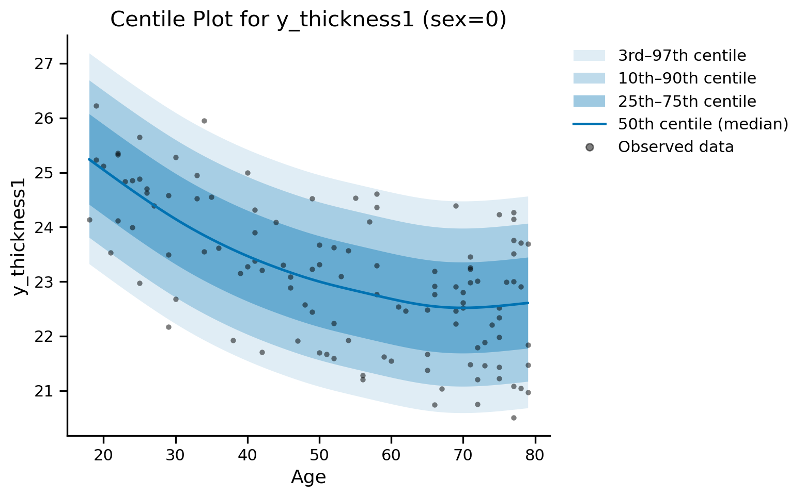
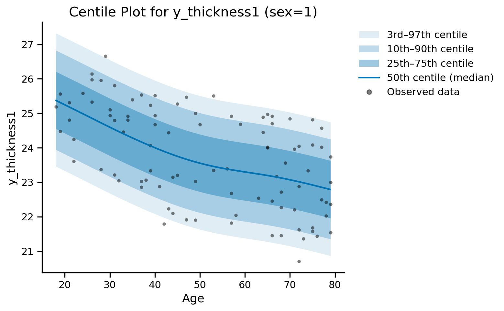
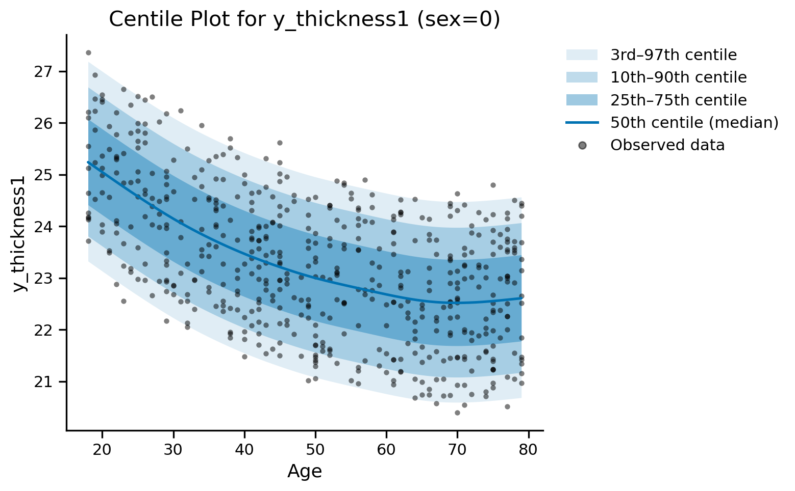
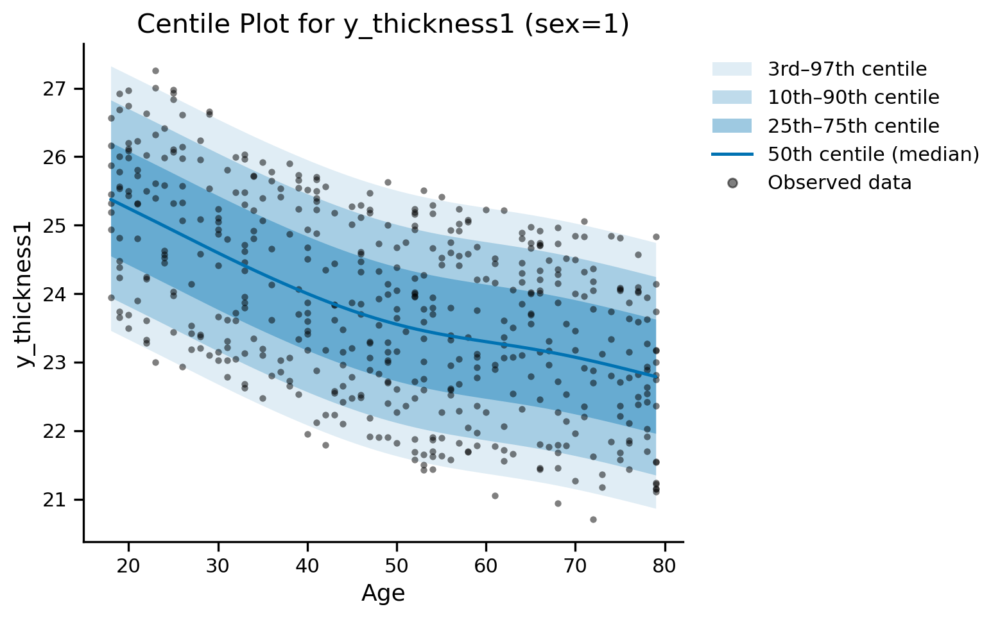
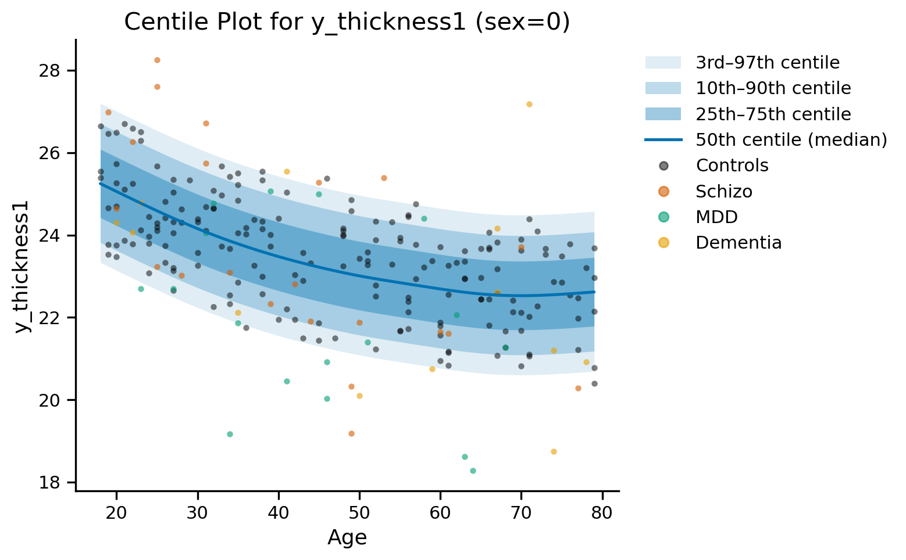
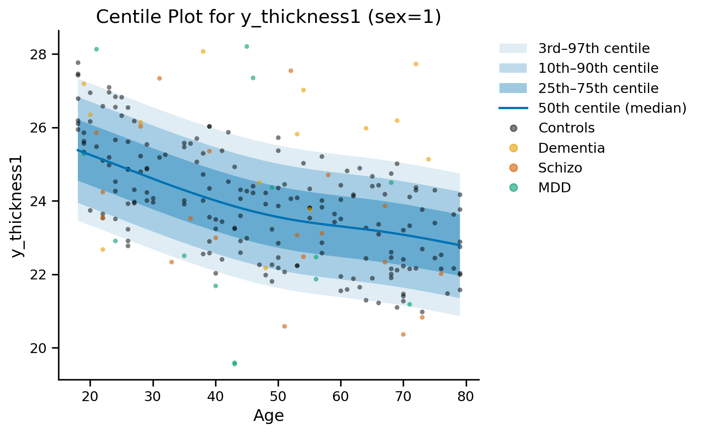
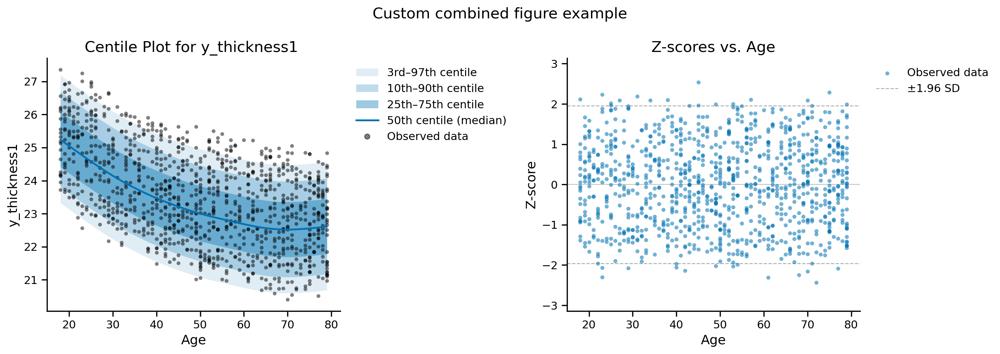

Centiles Plotting#
gamlss_main.Gamlss.
plot_centiles#
plot_centiles(test_data, train_data, centiles=[3, 10, 25, 50, 75, 90, 97],
func_name='SHASH', affected=None, variables_to_split=None,
x_axis={'age': 'Age'}, additional_global_vars=None, plot_scatter=True,
plot_all_data=False, subset_scatter=None, site_correction=False,
correction_col_name='site', figsize=(8, 5), save_image=None,
file_name=None, dpi=300, font_size=[15, 13, 13, 11],
use_transfer=False, gam_refit_path=None,
centile_color=None, save_pdf=False, ax=None,
params_to_adjust=None, adjustment_covariates=None)
Creates centile curve plots showing how the distribution changes across variables, drawn as a shaded centile fan (bands between symmetric centile pairs around a solid median line) rather than one line per centile. Automatically calculates fixed values for all variables in self.x_vals (except x-axis variable) using mode for categorical and mean for continuous variables. Can create separate plots for different variable combinations when variables_to_split is specified. Supports site transfer adjustments for new sites not in training data.
Parameters:
test_data : pandas.DataFrame
DataFrame containing the test data
train_data : pandas.DataFrame
DataFrame containing the training data
centiles : list, default=[3, 10, 25, 50, 75, 90, 97]
List of centiles to plot
func_name : str, default=’SHASH’
Distribution type
affected : numpy.ndarray, optional
Array indicating affected status for highlighting specific data points
'None', NaN and the healthy labels ('healthy', 'healthy control(s)', 'control(s)', any case) are drawn as Controls; every other label is drawn as its own group. Labels that mention ‘healthy’ or ‘control’ but are not on this list (e.g. 'healthy subject', 'unhealthy') raise an error asking you to rename them.
variables_to_split : dict, optional
Dictionary of variables and values to create separate plots for each combination (e.g., {‘sex’: [0, 1]})
x_axis : dict, default={‘age’: ‘Age’}
Dictionary mapping column name to display label for x-axis
additional_global_vars : dict, optional
Dictionary of variables with fixed values to override automatic mode/mean calculation (e.g., {‘site’: ‘ABCD’, ‘scanner’: ‘XYZ’})
plot_scatter : bool, default=True
Whether to show individual observed data points (small, muted) underneath the centile fan. Set to False for a clean fan-only publication view.
plot_all_data : bool, default=False
If False, filter scatter data based on subset_scatter variables and variables_to_split. If True, use all test data for scatter plot
subset_scatter : list, optional
List of variable names from fixed variables to use for filtering scatter data when plot_all_data=False (e.g., [‘site’, ‘scanner’])
site_correction : bool, default=False
If True, apply site correction to test data for scatter plot. Requires plot_all_data=True and correction_col_name column in data
correction_col_name : str, default=’site’
Name of the column containing site/group information for correction when site_correction=True
figsize : tuple, default=(8, 5)
Figure size as (width, height)
save_image : str, optional
Folder path to save image
file_name : str, optional
File name for saved image
dpi : int, default=300
DPI for saved image
font_size : list, default=[15, 13, 13, 11]
Font sizes for [title, x-axis, y-axis, legend]
use_transfer : bool, default=False
If True, use site transfer adjustments for centile calculation. Enables plotting centiles for sites not present in training data by applying site-specific corrections.
gam_refit_path : str, optional
Path to saved adjustment model (.rds file). Required if use_transfer=True.
Obtained from multisite_transfer() results as results[site]['gam_refit_model_path'].
Format: {folder}/adjustment_models/gam_refit_{site}_{sample_size_label}.rds (the percentage for a fractional sample_size, e.g. _20 for 0.2, or the count itself for an absolute one)
centile_color : str, optional
Hex color for the centile fan/median line. Defaults to a colorblind-safe blue (#0072B2).
save_pdf : bool, default=False
If True, additionally saves a vector .pdf copy alongside the primary saved image.
ax : matplotlib.axes.Axes, optional
Existing Axes to draw into, for composing this plot into your own figure/subplot grid, e.g. fig, axes = plt.subplots(1, 2); model.plot_centiles(..., ax=axes[0]).
Only valid when this call produces exactly one plot (i.e. variables_to_split is None, or resolves to a single combination with data) – raises ValueError otherwise.
If provided, draws into it instead of creating its own figure, and skips plt.show()/saving (you control display and saving). If None (default), behavior is unchanged.
params_to_adjust : list of str, optional
Parameters the transfer adjusted (site_transfer’s params_to_adjust). Only used if use_transfer=True.
If None (default), read from the saved adjustment model itself; if given, it must match what the transfer adjusted (an error is raised otherwise).
adjustment_covariates : list of str, optional
Covariate columns the transfer was fitted with (site_transfer’s adjustment_covariates). Only used if use_transfer=True.
Required when the adjustment model has covariate terms; leaving it out then raises an error (default is None).
The centile curves are drawn at one value of each covariate: the value given in additional_global_vars (e.g. {'field_strength': '3T'}), otherwise its mode (categorical) or mean (continuous) in test_data. A covariate in variables_to_split gets one plot per value.
Returns:
(fig, ax) or dict : (matplotlib.figure.Figure, matplotlib.axes.Axes) or dict
If exactly one plot was produced: the Figure and Axes used, so you can keep customizing after this call. If variables_to_split produced multiple plots: a dict mapping a string description of each combination to its own (fig, ax) pair.
Also displays centile plots with optional scatter data from test set. Automatically calculates and displays fixed values used for centile calculation. When plot_all_data=False, shows which variables were used for scatter data filtering. When use_transfer=True, adds “(Transfer Adjusted)” to plot title.
Transfer Usage Notes:
Site Transfer Workflow:
1. Run multisite_transfer() to create site-specific adjustment models
2. Get model path from results: results[site]['gam_refit_model_path']
3. Use proxy site in additional_global_vars (site model was trained on)
4. Set use_transfer=True and provide gam_refit_path
5. If the transfer used adjustment_covariates, pass the same list (params_to_adjust is read from the adjustment model automatically)
Without Transfer (use_transfer=False):
Centiles calculated using baseline model → May be biased for new sites
With Transfer (use_transfer=True):
Centiles calculated with site-specific adjustments → Corrects systematic bias
Examples:
import matplotlib.pyplot as plt
# Plotting centiles
gamlss_model.plot_centiles(df_train,df_train, func_name = 'SHASH', centiles = [3, 10, 25, 50, 75, 90, 97],
variables_to_split = {'sex': [0, 1]},subset_scatter=['site'], additional_global_vars={'site': 'HJDXM'},
x_axis={'age': 'Age'},plot_scatter=True, plot_all_data=False, site_correction=False,
figsize=(8, 5), save_image=None, file_name=None,
dpi=300, font_size=[15, 13, 13, 11]);
site: user specified = HJDXM
feature_volume1: mean = 998.390

Values used for centile calculation in this plot:
sex: 0
site: HJDXM
feature_volume1: 998.3902439376463
Scatter data filtered by:
subset_scatter variables: ['site']
site: HJDXM
variables_to_split:
sex: 0

Values used for centile calculation in this plot:
sex: 1
site: HJDXM
feature_volume1: 998.3902439376463
Scatter data filtered by:
subset_scatter variables: ['site']
site: HJDXM
variables_to_split:
sex: 1
# Plotting centiles
gamlss_model.plot_centiles(df_train,df_train, func_name = 'SHASH', centiles = [3, 10, 25, 50, 75, 90, 97],
variables_to_split = {'sex': [0, 1]}, additional_global_vars={'site': 'HJDXM'},
x_axis={'age': 'Age'},plot_scatter=True, plot_all_data=True, site_correction=True,
correction_col_name= 'site', figsize=(8, 5), save_image=None, file_name=None,
dpi=300, font_size=[15, 13, 13, 11]);
site: user specified = HJDXM
feature_volume1: mean = 998.390
=== Robust Random Effects Extraction for 'site' ===
Checking mu parameter...
Found random effects in mu parameter:
offset group
BCCLF -0.001427 BCCLF
ESZYC -0.000806 ESZYC
HJDXM -0.002133 HJDXM
HLMEG 0.001153 HLMEG
HSREL -0.002275 HSREL
KEMUB 0.000650 KEMUB
TIXLZ 0.005537 TIXLZ
ZSCPY -0.000698 ZSCPY
Using random effects from mu parameter
Using 'HJDXM' as reference site (offset = -0.002133)
Applying site corrections:
HJDXM: offset = 0.000000, n = 116
BCCLF: offset = 0.000707, n = 106
HSREL: offset = -0.000142, n = 90
TIXLZ: offset = 0.007670, n = 108
ESZYC: offset = 0.001327, n = 103
HLMEG: offset = 0.003286, n = 7
KEMUB: offset = 0.002783, n = 5
ZSCPY: offset = 0.001435, n = 5
Site correction completed. Added column 'y_thickness1_adjusted'
Verification:
Original mean: 23.273212
Adjusted mean: 23.271229
Mean difference: -0.001984

Values used for centile calculation in this plot:
sex: 0
site: HJDXM
feature_volume1: 998.3902439376463
=== Robust Random Effects Extraction for 'site' ===
Checking mu parameter...
Found random effects in mu parameter:
offset group
BCCLF -0.001427 BCCLF
ESZYC -0.000806 ESZYC
HJDXM -0.002133 HJDXM
HLMEG 0.001153 HLMEG
HSREL -0.002275 HSREL
KEMUB 0.000650 KEMUB
TIXLZ 0.005537 TIXLZ
ZSCPY -0.000698 ZSCPY
Using random effects from mu parameter
Using 'HJDXM' as reference site (offset = -0.002133)
Applying site corrections:
ESZYC: offset = 0.001327, n = 90
HSREL: offset = -0.000142, n = 86
BCCLF: offset = 0.000707, n = 107
HJDXM: offset = 0.000000, n = 94
TIXLZ: offset = 0.007670, n = 100
HLMEG: offset = 0.003286, n = 4
KEMUB: offset = 0.002783, n = 4
ZSCPY: offset = 0.001435, n = 5
Site correction completed. Added column 'y_thickness1_adjusted'
Verification:
Original mean: 23.827809
Adjusted mean: 23.825806
Mean difference: -0.002003

Values used for centile calculation in this plot:
sex: 1
site: HJDXM
feature_volume1: 998.3902439376463
# Plotting centiles
gamlss_model.plot_centiles(test_data1,df_train, affected=test_data1['affected'],func_name = 'SHASH',
centiles = [3, 10, 25, 50, 75, 90, 97],
variables_to_split = {'sex': [0, 1]}, x_axis={'age': 'Age'},
plot_all_data=False, site_correction=False);
site: mode = TIXLZ
feature_volume1: mean = 997.142

Values used for centile calculation in this plot:
sex: 0
site: TIXLZ
feature_volume1: 997.1419533156228
Scatter data filtered by:
variables_to_split:
sex: 0

Values used for centile calculation in this plot:
sex: 1
site: TIXLZ
feature_volume1: 997.1419533156228
Scatter data filtered by:
variables_to_split:
sex: 1
Combining plots into your own custom figure#
The composable plotting methods (plot_z_scores, plot_centiles, plot_diagnostics,
and plot_sampling_coverage) accept an optional ax= (or axes=/axs=
for the multi-panel ones) and return (fig, ax). This means you can build your own
figure/subplot grid with plain matplotlib, hand individual subplots to these functions, and
keep adding your own titles, annotations, or extra panels afterward – without touching any of
the underlying centile/z-score calculation code.
If you don’t pass
ax=, nothing changes from before: the function creates its own figure, shows it, and saves it ifsave_imageis set.If you pass
ax=, the function draws into that Axes instead, and leaves display/saving to you (so it doesn’t callplt.show()or save partway through building your composite figure).plot_centiles(..., ax=...)only works when the call produces exactly one plot – ifvariables_to_splitwould produce more than one, it raises a clear error rather than silently drawing just the last one into your Axes.plot_continuous_centilesis the one method without anax=parameter: it always builds its own multi-subplot grid internally (one panel per split/range combination), so there is no single Axes it could sensibly draw into. It still returns(fig, axes)for further customization after the call.plot_z_scoresis the one exception to the first bullet above: withpanels='both'(the default) and noax=, it produces two independent figures – each sized normally for its own content – rather than one shared subplot grid. Pass your ownax=(scatter_ax, distribution_ax)to combine both into one figure instead, orpanels='scatter'/'distribution'to embed just one panel into a single Axes, as in the example below.
Example: putting a centile plot and a z-score plot side by side in one figure you control.
# Build your own figure/subplot grid -- this part is plain matplotlib, not normgamlss
fig, axes = plt.subplots(1, 2, figsize=(14, 5))
# Hand each subplot to the relevant plotting method via ax=
gamlss_model.plot_centiles(df_train, df_train, func_name='SHASH', ax=axes[0])
gamlss_model.plot_z_scores(df_train, df_train, func_name='SHASH', panels='scatter', ax=axes[1])
# Keep customizing the combined figure however you like
fig.suptitle('Custom combined figure example', fontsize=15)
fig.tight_layout()
plt.show()
# fig.savefig('custom_combined_figure.png', dpi=300, bbox_inches='tight') # save it yourself whenever you're ready
sex: mode = 0
site: mode = BCCLF
feature_volume1: mean = 998.390
Values used for centile calculation in this plot:
sex: 0
site: BCCLF
feature_volume1: 998.3902439376463
Scatter data filtered by:
No filtering applied (showing all scatter data)
